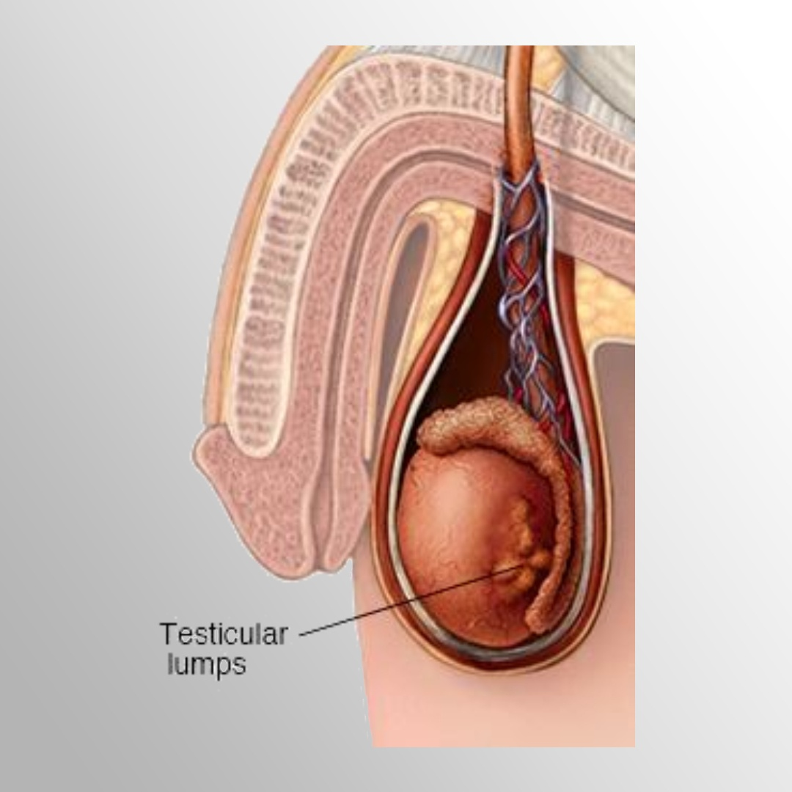

Testicular cancer

SYMPTOMS:
The following symptoms can be signs of testicular cancer or of another condition. Consult a doctor if you have any of these symptoms:
- Swelling or a sudden gathering of fluid in the scrotum
-
Feeling of heaviness in the scrotum
-
A lump or swelling in either testicle
-
Build-up of fluid on the scrotum
-
Dull ache in the groin or lower abdomen
-
Pain or discomfort in the scrotum or a testicle
-
A shrinking testicle
RISK FACTORS
Risk factors for developing testicular cancer include:
- Undescended testicle(s): This is when one or both testicles do not move down into the scrotum before birth.
-
Race: Non-Hispanic, white men are more likely to develop this cancer than men of other races and ethnicities.
-
Personal or family history: Men with a brother or father who had testicular cancer have an increased risk of developing the condition themselves. Men who have had cancer themselves in one testicle are at increased risk of developing a second cancer in the other testicle.
-
Infertility: Men who are infertile have a higher likelihood of developing testicular cancer. Some of the same factors that result in infertility may also be related to the development of testicular cancer but there is not a good understanding of the connection.
DIAGNOSIS
- Ultrasound: This is a procedure that uses high-energy sound waves to form pictures of body tissues.
-
A physical exam and history: A physical exam and medical history can help the doctor look for problems that might be related to testicular cancer.
-
A serum tumor marker test: This procedure examines a blood sample to measure the amounts of certain substances linked to specific types of cancers. These substances are called tumor markers. The tumor markers that are often elevated in testicular cancer are alpha-fetoprotein (AFP), human chorionic gonadotrophin (HCG or beta-HCG) and lactate dehydrongenase (LDH).
-
Inguinal orchiectomy and biopsy: This procedure involves the removal of the entire testicle through an incision in the groin. A tissue sample from the testicle is then checked for cancer cells.
-
CT scans and X-rays: A CT scan is a medical test that uses X-rays to form pictures of the inside of the body. When a cancer is diagnosed or suspected, a CT scan (also referred to as a CAT scan) is performed to see whether cancer can be seen elsewhere in the body. In testicular cancer, a CT scan is performed of the abdomen and pelvis. Images of the chest are taken using either a CT scan or a regular X-ray.